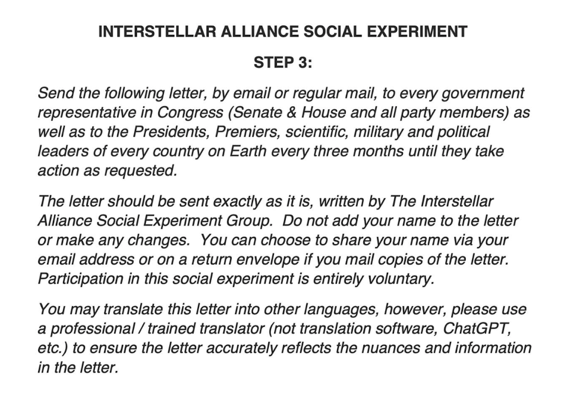

GPT-4o announcement and thoughts
With the upcoming release of GPT-4o, it kinda feels like something out of a sci-fi movie. The ability to feed an AI your camera, screen, and have it coach you or talk to you based on what you are doing in a video game or asking it about the surrounding environment? Kind of crazy.
Here's some of my honest thoughts. I think it's pretty dystopian, but I do see a bunch of people using an AI assistant to help them make a lot of decisions. It really does sound straight out of black mirror or something! Yeah, it's pretty wild. But I personally can't wait to try to use it.
As long as you could use it when you want unlike Windows Recall (which in my honest opinion is literal spyware xd) I don't really see an issue with it. Anyways, that sums up my thoughts on GPT-4o.
Aliens, Demons, The Good, The Bad, and the Impossible
I had the craziest supernatural experience last night. It started with me tuning my brain with certain sound frequencies. I was able to open my chakras and enable myself to listen to the universe. Almost like an antennae, I was able to hear into other planes of existence. (Yes there are multiple planes of existence.)
I had contact with everything: Jesus, aliens, shadow figures (skinwalkers), time travelers, it was so surreal and unexplainable, it makes me sound crazy. But idgaf how I sound, because I trust my intuition and can trust my brain. Frequencies can unlock new neural pathways within the brain, meditation, and hypnosis can aide in this process.
I probably sound like a schizophrenic person with the title, but if you read what I have said and take it with a grain of salt or heaping tablespoons of salt maybe you can even experience the exact same thing I did. Or just dismiss it, I don't care to be honest.
I also am going to post a letter for you to send to the governments of the world regarding the UFO / UAP / Extraterrestrial / Extradimensional phenomena. The aliens are indeed peaceful and have been monitoring humanity for many years. This is a social experiment, if you do not wish to participate, you do not have to.
Download the letter
Becoming a content creator in 2024, my personal experience
Hey there! You! Yes, I'm talking to you. Whatever year you are reading this, wherever you are. I am minepoof, a cybersecurity novice. I recently started streaming on kick!
I also made a youtube channel, plan on uploading weekly videos, and making epic content for youtube. I really enjoy making content online, and profiting through merch, subscriptions, and hard work.
I think that a lot of people are going to lose jobs due to AI robots being employed by big businesses. By 2033, people will likely be suprised by the amount of robots that have human jobs.
So, in an effort to still make wages in a digital world, I started making content online, for people to enjoy! I hope, that you enjoy my content, and if you wanna see it, there are two buttons below, which lead to:
My kick channel @ https://kick.com/lumbar, and my youtube channel @ lumbarTV.
You can support my individual journalism by subscribing and following my social media below.